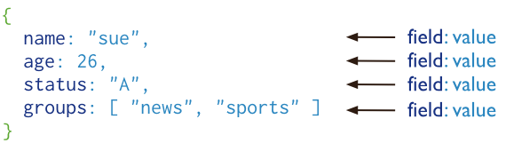
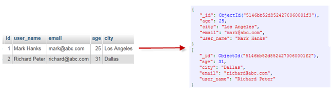
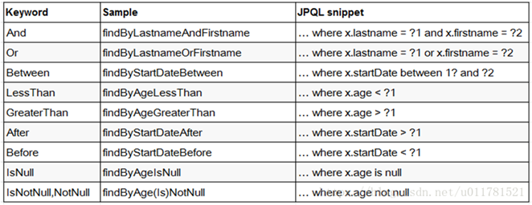
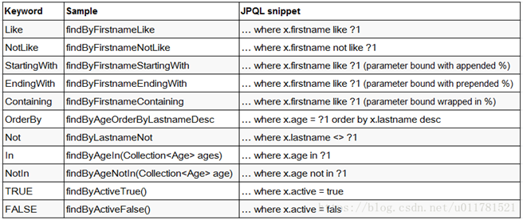

<!DOCTYPE html>


<html lang="zh-Hans">
  

    <head>
      <meta charset="utf-8" />
        
      <meta name="description" content="Technical output and problem solving record" />
      
      <meta
        name="viewport"
        content="width=device-width, initial-scale=1, maximum-scale=1"
      />
      <title>MongoDB使用 |  Tunan`s Blog</title>
  <meta name="generator" content="hexo-theme-ayer">
      
      <link rel="shortcut icon" href="/favicon.ico" />
       
<link rel="stylesheet" href="/dist/main.css">

      <link
        rel="stylesheet"
        href="https://cdn.jsdelivr.net/gh/Shen-Yu/cdn/css/remixicon.min.css"
      />
      
<link rel="stylesheet" href="/css/custom.css">
 
      <script src="https://cdn.jsdelivr.net/npm/pace-js@1.0.2/pace.min.js"></script>
       
 

      <link
        rel="stylesheet"
        href="https://cdn.jsdelivr.net/npm/@sweetalert2/theme-bulma@5.0.1/bulma.min.css"
      />
      <script src="https://cdn.jsdelivr.net/npm/sweetalert2@11.0.19/dist/sweetalert2.min.js"></script>

      <!-- mermaid -->
      
      <style>
        .swal2-styled.swal2-confirm {
          font-size: 1.6rem;
        }
      </style>
    </head>
  </html>
</html>


<body>
  <div id="app">
    
      
    <main class="content on">
      <section class="outer">
  <article
  id="post-MongoDB使用"
  class="article article-type-post"
  itemscope
  itemprop="blogPost"
  data-scroll-reveal
>
  <div class="article-inner">
    
    <header class="article-header">
       
<h1 class="article-title sea-center" style="border-left:0" itemprop="name">
  MongoDB使用
</h1>
 

      
    </header>
     
    <div class="article-meta">
      <a href="/2022/03/17/MongoDB%E4%BD%BF%E7%94%A8/" class="article-date">
  <time datetime="2022-03-17T02:44:50.000Z" itemprop="datePublished">2022-03-17</time>
</a> 
  <div class="article-category">
    <a class="article-category-link" href="/categories/%E9%A1%B9%E7%9B%AE/">项目</a>
  </div>
  
<div class="word_count">
    <span class="post-time">
        <span class="post-meta-item-icon">
            <i class="ri-quill-pen-line"></i>
            <span class="post-meta-item-text"> Word count:</span>
            <span class="post-count">3.4k</span>
        </span>
    </span>

    <span class="post-time">
        &nbsp; | &nbsp;
        <span class="post-meta-item-icon">
            <i class="ri-book-open-line"></i>
            <span class="post-meta-item-text"> Reading time≈</span>
            <span class="post-count">14 min</span>
        </span>
    </span>
</div>
 
    </div>
      
    <div class="tocbot"></div>


  
    <div class="article-entry" itemprop="articleBody">
       
  <h1 id="MongoDB"><a href="#MongoDB" class="headerlink" title="MongoDB"></a>MongoDB</h1><p>MongoDB 是由C++语言编写的，是一个基于分布式文件存储的开源数据库系统。</p>
<p>在高负载的情况下，添加更多的节点，可以保证服务器性能。</p>
<p>MongoDB 旨在为WEB应用提供可扩展的高性能数据存储解决方案。<span id="more"></span></p>
<p>MongoDB 将数据存储为一个文档，数据结构由键值(key=&gt;value)对组成。</p>
<p>MongoDB 文档类似于 JSON 对象。字段值可以包含其他文档，数组及文档数组。</p>
<p></p>
<h1 id="MongoDB特点"><a href="#MongoDB特点" class="headerlink" title="MongoDB特点"></a>MongoDB特点</h1><p>1、MongoDB 是一个面向文档存储的数据库，操作起来比较简单和容易。</p>
<p>2、你可以在MongoDB记录中设置任何属性的索引 (如：FirstName=”Sameer”,Address=”8 Gandhi Road”)来实现更快的排序。</p>
<p>3、你可以通过本地或者网络创建数据镜像，这使得MongoDB有更强的扩展性。</p>
<p>4、如果负载的增加（需要更多的存储空间和更强的处理能力） ，它可以分布在计算机网络中的其他节点上这就是所谓的分片。</p>
<p>5、Mongo支持丰富的查询表达式。查询指令使用JSON形式的标记，可轻易查询文档中内嵌的对象及数组。</p>
<p>6、MongoDb 使用update()命令可以实现替换完成的文档（数据）或者一些指定的数据字段 。</p>
<p>7、Mongodb中的Map/reduce主要是用来对数据进行批量处理和聚合操作。</p>
<p>8、Map和Reduce。Map函数调用emit(key,value)遍历集合中所有的记录，将key与value传给Reduce函数进行处理。</p>
<p>9、Map函数和Reduce函数是使用Javascript编写的，并可以通过db.runCommand或mapreduce命令来执行MapReduce操作。</p>
<p>10、GridFS是MongoDB中的一个内置功能，可以用于存放大量小文件。</p>
<p>11、MongoDB允许在服务端执行脚本，可以用Javascript编写某个函数，直接在服务端执行，也可以把函数的定义存储在服务端，下次直接调用即可。</p>
<p>12、MongoDB支持各种编程语言:RUBY，PYTHON，JAVA，C++，PHP，C#等多种语言。</p>
<p>13、MongoDB安装简单。</p>
<h1 id="安装"><a href="#安装" class="headerlink" title="安装"></a>安装</h1><pre><code class="bash">#拉取镜像 
docker pull mongo:latest

#创建和启动容器 
docker run -d --restart=always -p 27017:27017 --name mymongo -v /data/db:/data/db -d mongo

#进入容器 
docker exec -it mymongo/bin/bash 

#使用MongoDB客户端进行操作 
mongo 

&gt; show dbs #查询所有的数据库 
admin 0.000GB 
config 0.000GB 
local 0.000GB 
</code></pre>
<h1 id="概念解析"><a href="#概念解析" class="headerlink" title="概念解析"></a>概念解析</h1><p>不管我们学习什么数据库都应该学习其中的基础概念，在mongodb中基本的概念是文档、集合、数据库，下面我们挨个介绍。</p>
<p>下表将帮助您更容易理解Mongo中的一些概念：</p>
<table>
<thead>
<tr>
<th>SQL术语/概念</th>
<th>MongoDB术语/概念</th>
<th>解释/说明</th>
</tr>
</thead>
<tbody><tr>
<td>database</td>
<td>database</td>
<td>数据库</td>
</tr>
<tr>
<td>table</td>
<td>collection</td>
<td>数据库表/集合</td>
</tr>
<tr>
<td>row</td>
<td>document</td>
<td>数据记录行/文档</td>
</tr>
<tr>
<td>column</td>
<td>field</td>
<td>数据字段/域</td>
</tr>
<tr>
<td>index</td>
<td>index</td>
<td>索引</td>
</tr>
<tr>
<td>table joins</td>
<td></td>
<td>表连接,MongoDB不支持</td>
</tr>
<tr>
<td>primary key</td>
<td>primary key</td>
<td>主键,MongoDB自动将_id字段设置为主键</td>
</tr>
</tbody></table>
<p></p>
<h1 id="常用命令"><a href="#常用命令" class="headerlink" title="常用命令"></a>常用命令</h1><pre><code class="bash">1、 Help查看命令提示 
db.help();
2、 切换/创建数据库
use test
如果数据库不存在，则创建数据库，否则切换到指定数据库
3、 查询所有数据库 
show dbs;
4、 删除当前使用数据库 
db.dropDatabase();
5、 查看当前使用的数据库 
db.getName();
6、 显示当前db状态 
db.stats();
7、 当前db版本 
db.version();
8、 查看当前db的链接机器地址 
db.getMongo〇;


1、 创建一个集合（table)
db.createCollection( &quot;collName&quot;);
2、 得到指定名称的集合（table )
db.getCollection(&quot;user&quot;);

</code></pre>
<h1 id="适用场景"><a href="#适用场景" class="headerlink" title="适用场景"></a>适用场景</h1><p><strong>适用场景</strong></p>
<p>1、网站数据：Mongo非常适合实时的插入，更新与查询，并具备网站实时数据存储所需的复制及高度伸缩性。</p>
<p>2、缓存：由于性能很高，Mongo也适合作为信息基础设施的缓存层。在系统重启之后，由Mongo搭建的持久化缓存层可以避免下层的数据源过载。</p>
<p>3、大尺寸，低价值的数据：使用传统的关系型数据库存储一些数据时可能会比较昂贵， 在此之前，很多时候程序员往往会选择传统的文件进行存储。</p>
<p>4、高伸缩性的场景：Mongo非常适合由数十或数百台服务器组成的数据库。Mongo的路线图中已经包含对Map Reduce弓摩的内置支持。</p>
<p>5、用于对象及 JSON数据的存储：Mongo的BSON数据格式非常适合文档化格式的存储 及查询。</p>
<p><strong>不适用场合</strong></p>
<p>1、高度事务性的系统：例如银行或会计系统。传统的关系型数据库目前还是更适用于需要大量原子性复杂事务的应用程序。</p>
<p>2、传统的商业智能应用：针对特定问题的BI数据库会对产生高度优化的查询方式。对于此类应用，数据仓库可能是更合适的选择。</p>
<h1 id="MongoDB-语言与SQL的对比使用"><a href="#MongoDB-语言与SQL的对比使用" class="headerlink" title="MongoDB 语言与SQL的对比使用"></a>MongoDB 语言与SQL的对比使用</h1><h2 id="Insert"><a href="#Insert" class="headerlink" title="Insert"></a>Insert</h2><pre><code class="bash">

&gt; db.User.save(&#123;name:&#39;zhangsan&#39;,age:21,sex:true&#125;)
&gt; db.User.find()
&#123;&quot;_id&quot;: Objectld(&quot;4f69e680c9106ee2ec95da66&quot;), &quot;name&quot;: &quot;zhangsan&quot;, &quot;age&quot;: 21,
&quot;sex&quot;: true&#125;
</code></pre>
<p>_id组合</p>
<p>Objectld是、id”的默认类型。Objectld使用12字节的存储空间，每个字节二位十六进制数字， 是一个24位的字符串</p>
<p></p>
<ol>
<li><p>时间戳：时间不断变化的</p>
</li>
<li><p>机器：主机的唯_标识码。通常是机器主机名的散列值，这样可以确保不同主机 </p>
</li>
</ol>
<p>生成不同的Objectld ,不产生冲突。</p>
<ol start="3">
<li>PID:为了确保在同一台机器上并发的多个进程产生的Objectld是唯一的，</li>
</ol>
<p>所以加上进程标识符(PID).</p>
<ol start="4">
<li>计数器：前9个字节保证了同一秒钟不同机器不同进程产生的Objectld是唯一的。 </li>
</ol>
<p>后3个字节就是一个自动增加的计数器，确保相同进程同一秒产生的Objectld也是 不一样。同一秒最多允许每个进程拥有IS 777 2托个不同的Objectld。</p>
<h2 id="Query"><a href="#Query" class="headerlink" title="Query"></a>Query</h2><p>1、WHERE</p>
<pre><code class="bash"> # select * from User where name =  &#39;zhangsan&#39;  
 &gt; db.User.find(&#123;name:&quot;zhangsan&quot;&#125;)  
</code></pre>
<p>2、FIELDS</p>
<pre><code class="bash"># select name, age from User where age  = 21  
&gt; db.User.find(&#123;age:21&#125;,  &#123;&#39;name&#39;:1, &#39;age&#39;:1&#125;)  
</code></pre>
<p>3、SORT</p>
<p>在 MongoDB 中使用 sort() 方法对数据进行排序，sort() 方法可以通过参数指定排序的字段，并使用 1 和 -1 来指定排序的方式，其中 1 为升序排列，而 -1 是用于降序排列。</p>
<pre><code class="bash">  # select * from User order by age  
  &gt; db.User.find().sort(&#123;age:1&#125;)  
</code></pre>
<p>4、SUCE</p>
<p>在 MongoDB 中使用 limit()方法来读取指定数量的数据，skip()方法来跳过指定数量的数据</p>
<pre><code class="bash">  # select * from User skip 2 limit 3  
  &gt; db.User.find().skip(0).limit(3)  
</code></pre>
<p>5、IN</p>
<pre><code class="bash"> # select * from User where age in (21,  26, 32)  
 &gt; db.User.find(&#123;age:&#123;$in:[21,26,32]&#125;&#125;)  
</code></pre>
<p>6、COUNT</p>
<pre><code class="bash">  # select count(*) from User where age  &gt;20  
  &gt;  db.User.find(&#123;age:&#123;$gt:20&#125;&#125;).count()  
</code></pre>
<p>7、0R</p>
<pre><code class="bash">  # select * from User where age = 21 or  age = 28  
  &gt;  db.User.find(&#123;$or:[&#123;age:21&#125;, &#123;age:28&#125;]&#125;)  
</code></pre>
<h2 id="Update"><a href="#Update" class="headerlink" title="Update"></a>Update</h2><p>可直接用类似T-SQL条件表达式更新，或用SaveO更新从数据库返回到文档对象。</p>
<pre><code class="bash"># update User set age = 100, sex = 0  where name = &#39;user1&#39;  
&gt; db.User.update(&#123;name:&quot;zhangsan&quot;&#125;,  &#123;$set:&#123;age:100, sex:0&#125;&#125;)  
</code></pre>
<p>Update()有几个参数需要注意。</p>
<p>db.collection.update(criteria, objNew, upsert, mult)</p>
<p>criteria:需要更新的条件表达式</p>
<p>objNew:更新表达式</p>
<p>upsert:如FI标记录不存在，是否插入新文档。 </p>
<p>multi:是否更新多个文档。</p>
<h2 id="Remove"><a href="#Remove" class="headerlink" title="Remove"></a>Remove</h2><p>removeO用于删除单个或全部文档，删除后的文档无法恢复。</p>
<pre><code class="bash">  &gt; db.User.remove(id)  //移除对应id的行  
  &gt; db.User.remove(&#123;&#125;)  //移除所有  
</code></pre>
<h2 id="aggregate"><a href="#aggregate" class="headerlink" title="aggregate"></a>aggregate</h2><p>MongoDB中聚合(aggregate)主要用于处理数据(诸如统计平均值,求和等)，并返回计算后的数据结果。有点类似sql语句中的 count(*)</p>
<p>常见聚合表达式</p>
<table>
<thead>
<tr>
<th><strong>表达式</strong></th>
<th><strong>描述</strong></th>
<th><strong>实例</strong></th>
</tr>
</thead>
<tbody><tr>
<td>$sum</td>
<td>计算总和。</td>
<td>db.mycol.aggregate([{$group  : {_id : “$by_user”, num_tutorial : {$sum : “$likes”}}}])</td>
</tr>
<tr>
<td>$avg</td>
<td>计算平均值</td>
<td>db.mycol.aggregate([{$group  : {_id : “$by_user”, num_tutorial : {$avg : “$likes”}}}])</td>
</tr>
<tr>
<td>$min</td>
<td>获取集合中所有文档对应值得最小值。</td>
<td>db.mycol.aggregate([{$group  : {_id : “$by_user”, num_tutorial : {$min : “$likes”}}}])</td>
</tr>
<tr>
<td>$max</td>
<td>获取集合中所有文档对应值得最大值。</td>
<td>db.mycol.aggregate([{$group  : {_id : “$by_user”, num_tutorial : {$max : “$likes”}}}])</td>
</tr>
<tr>
<td>$push</td>
<td>在结果文档中插入值到一个数组中。</td>
<td>db.mycol.aggregate([{$group  : {_id : “$by_user”, url : {$push: “$url”}}}])</td>
</tr>
<tr>
<td>$addToSet</td>
<td>在结果文档中插入值到一个数组中，但不创建副本。</td>
<td>db.mycol.aggregate([{$group  : {_id : “$by_user”, url : {$addToSet : “$url”}}}])</td>
</tr>
<tr>
<td>$first</td>
<td>根据资源文档的排序获取第一个文档数据。</td>
<td>db.mycol.aggregate([{$group  : {_id : “$by_user”, first_url : {$first : “$url”}}}])</td>
</tr>
<tr>
<td>$last</td>
<td>根据资源文档的排序获取最后一个文档数据</td>
<td>db.mycol.aggregate([{$group  : {_id : “$by_user”, last_url : {$last : “$url”}}}])</td>
</tr>
</tbody></table>
<h2 id="索引"><a href="#索引" class="headerlink" title="索引"></a>索引</h2><p>索引通常能够极大的提高查询的效率，如果没有索引，MongoDB在读取数据时必须扫描集合中的每个文件并选取那些符合查询条件的记录。</p>
<p>这种扫描全集合的查询效率是非常低的，特别在处理大量的数据时，查询可以要花费几十秒甚至几分钟，这对网站的性能是非常致命的。</p>
<p>索引是特殊的数据结构，索引存储在一个易于遍历读取的数据集合中，索引是对数据库表中一列或多列的值进行排序的一种结构。</p>
<pre><code class="bash">&gt;db.User.createIndex(&#123;&quot;name&quot;:1&#125;)
</code></pre>
<p>语法中 name值为你要创建的索引字段，1 为指定按升序创建索引，如果你想按降序来创建索引指定为 -1 即可</p>
<h1 id="SpringBoot-集成MongoDB"><a href="#SpringBoot-集成MongoDB" class="headerlink" title="SpringBoot 集成MongoDB"></a>SpringBoot 集成MongoDB</h1><h2 id="集成简介"><a href="#集成简介" class="headerlink" title="集成简介"></a>集成简介</h2><p>spring-data-mongodb提供了MongoTemplate与MongoRepository两种方式访问mongodb</p>
<p>MongoRepository操作简单，MongoTemplate操作灵活</p>
<p>我们在项目中可以灵活适用这两种方式操作mongodb，MongoRepository的缺点是不够灵活，MongoTemplate正好可以弥补不足。</p>
<h2 id="环境与配置"><a href="#环境与配置" class="headerlink" title="环境与配置"></a>环境与配置</h2><p>引入依赖</p>
<pre><code class="xml">&lt;dependency&gt;
        &lt;groupId&gt;org.springframework.boot&lt;/groupId&gt;
        &lt;artifactId&gt;spring-boot-starter-data-mongodb&lt;/artifactId&gt;
    &lt;/dependency&gt;
&lt;dependency&gt;
</code></pre>
<p>添加配置</p>
<pre><code class="properties">spring.data.mongodb.uri=mongodb://127.0.0.1:27017/test
</code></pre>
<h2 id="基于MongoTemplate-开发CRUD"><a href="#基于MongoTemplate-开发CRUD" class="headerlink" title="基于MongoTemplate 开发CRUD"></a>基于MongoTemplate 开发CRUD</h2><h3 id="添加实体类"><a href="#添加实体类" class="headerlink" title="添加实体类"></a>添加实体类</h3><pre><code class="java">@Data
@Document(&quot;User&quot;)
public class User &#123;

 @Id
 private String id;
 private String name;
 private Integer age;
 private String email;
 private String createDate;
&#125;
</code></pre>
<h3 id="常用方法"><a href="#常用方法" class="headerlink" title="常用方法"></a>常用方法</h3><p> mongoTemplate.findAll(User.class): 查询User文档的全部数据<br> mongoTemplate.findById(<id>, User.class): 查询User文档id为id的数据<br> mongoTemplate.find(query, User.class);: 根据query内的查询条件查询<br> mongoTemplate.upsert(query, update, User.class): 修改<br> mongoTemplate.remove(query, User.class): 删除<br> mongoTemplate.insert(User): 新增</p>
<p>Query对象<br> 1、创建一个query对象（用来封装所有条件对象)，再创建一个criteria对象（用来构建条件）<br> 2、 精准条件：criteria.and(“key”).is(“条件”)<br>        模糊条件：criteria.and(“key”).regex(“条件”)<br> 3、封装条件：query.addCriteria(criteria)<br> 4、大于（创建新的criteria）：Criteria gt = Criteria.where(“key”).gt（“条件”）<br> 小于（创建新的criteria）：Criteria lt = Criteria.where(“key”).lt（“条件”）<br> 5、Query.addCriteria(new Criteria().andOperator(gt,lt));<br> 6、一个query中只能有一个andOperator()。其参数也可以是Criteria数组。<br> 7、排序 ：query.with（new Sort(Sort.Direction.ASC, “age”). and(new Sort(Sort.Direction.DESC, “date”)))</p>
<h3 id="测试"><a href="#测试" class="headerlink" title="测试"></a>测试</h3><pre><code class="java">@SpringBootTest
class DemomogoApplicationTests &#123;

    @Autowired
    private MongoTemplate mongoTemplate;

    //添加
    @Test
    public void createUser() &#123;
        User user = new User();
        user.setAge(20);
        user.setName(&quot;test&quot;);
        user.setEmail(&quot;4932200@qq.com&quot;);
        User user1 = mongoTemplate.insert(user);
        System.out.println(user1);
    &#125;

    //查询所有
    @Test
    public void findUser() &#123;
        List&lt;User&gt; userList = mongoTemplate.findAll(User.class);
        System.out.println(userList);
    &#125;

    //根据id查询
    @Test
    public void getById() &#123;
        User user = 
mongoTemplate.findById(&quot;5ffbfa2ac290f356edf9b5aa&quot;, User.class);
        System.out.println(user);
    &#125;

    //条件查询
    @Test
    public void findUserList() &#123;
        Query query = new Query(Criteria
                .where(&quot;name&quot;).is(&quot;test&quot;)
                .and(&quot;age&quot;).is(20));
        List&lt;User&gt; userList = mongoTemplate.find(query, User.class);
        System.out.println(userList);
    &#125;

    //模糊查询
    @Test
    public void findUsersLikeName() &#123;
        String name = &quot;est&quot;;
        String regex = String.format(&quot;%s%s%s&quot;, &quot;^.*&quot;, name, &quot;.*$&quot;);
        Pattern pattern = Pattern.compile(regex, Pattern.CASE_INSENSITIVE);
        Query query = new Query(Criteria.where(&quot;name&quot;).regex(pattern));
        List&lt;User&gt; userList = mongoTemplate.find(query, User.class);
        System.out.println(userList);
    &#125;

    //分页查询
    @Test
    public void findUsersPage() &#123;
        String name = &quot;est&quot;;
        int pageNo = 1;
        int pageSize = 10;

        Query query = new Query();
        String regex = String.format(&quot;%s%s%s&quot;, &quot;^.*&quot;, name, &quot;.*$&quot;);
        Pattern pattern = Pattern.compile(regex, Pattern.CASE_INSENSITIVE);
        query.addCriteria(Criteria.where(&quot;name&quot;).regex(pattern));
        int totalCount = (int) mongoTemplate.count(query, User.class);
        List&lt;User&gt; userList = mongoTemplate.find(query.skip((pageNo - 1) * pageSize).limit(pageSize), User.class);

        Map&lt;String, Object&gt; pageMap = new HashMap&lt;&gt;();
        pageMap.put(&quot;list&quot;, userList);
        pageMap.put(&quot;totalCount&quot;,totalCount);
        System.out.println(pageMap);
    &#125;

    //修改
    @Test
    public void updateUser() &#123;
        User user = mongoTemplate.findById(&quot;5ffbfa2ac290f356edf9b5aa&quot;, User.class);
        user.setName(&quot;test_1&quot;);
        user.setAge(25);
        user.setEmail(&quot;493220990@qq.com&quot;);
        Query query = new Query(Criteria.where(&quot;_id&quot;).is(user.getId()));
        Update update = new Update();
        update.set(&quot;name&quot;, user.getName());
        update.set(&quot;age&quot;, user.getAge());
        update.set(&quot;email&quot;, user.getEmail());
        UpdateResult result = mongoTemplate.upsert(query, update, User.class);
        long count = result.getModifiedCount();
        System.out.println(count);
    &#125;

    //删除操作
    @Test
    public void delete() &#123;
        Query query = 
new Query(Criteria.where(&quot;_id&quot;).is(&quot;5ffbfa2ac290f356edf9b5aa&quot;));
        DeleteResult result = mongoTemplate.remove(query, User.class);
        long count = result.getDeletedCount();
        System.out.println(count);
    &#125;
&#125;
</code></pre>
<h2 id="基于MongoRepository开发CRUD"><a href="#基于MongoRepository开发CRUD" class="headerlink" title="基于MongoRepository开发CRUD"></a>基于MongoRepository开发CRUD</h2><p>Spring Data提供了对mongodb数据访问的支持，我们只需要继承MongoRepository类，按照Spring Data规范就可以了</p>
<p>SpringData 方法定义规范</p>
<p></p>
<p></p>
<p>==注意：==</p>
<p>1、不是随便声明的，而需要符合一定的规范<br> 2、 查询方法以find | read | get开头<br> 3、 涉及条件查询时，条件的属性用条件关键字连接<br> 4、 要注意的是：条件属性首字母需要大写<br> 5、 支持属性的级联查询，但若当前类有符合条件的属性则优先使用，而不使用级联属性,若需要使用级联属性，则属性之间使用_强制进行连接</p>
 
      <!-- reward -->
      
    </div>
    

    <!-- copyright -->
    
    <div class="declare">
      <ul class="post-copyright">
        <li>
          <i class="ri-copyright-line"></i>
          <strong>Copyright： </strong>
          
          Copyright is owned by the author. For commercial reprints, please contact the author for authorization. For non-commercial reprints, please indicate the source.
          
        </li>
      </ul>
    </div>
    
    <footer class="article-footer">
       
<div class="share-btn">
      <span class="share-sns share-outer">
        <i class="ri-share-forward-line"></i>
        分享
      </span>
      <div class="share-wrap">
        <i class="arrow"></i>
        <div class="share-icons">
          
          <a class="weibo share-sns" href="javascript:;" data-type="weibo">
            <i class="ri-weibo-fill"></i>
          </a>
          <a class="weixin share-sns wxFab" href="javascript:;" data-type="weixin">
            <i class="ri-wechat-fill"></i>
          </a>
          <a class="qq share-sns" href="javascript:;" data-type="qq">
            <i class="ri-qq-fill"></i>
          </a>
          <a class="douban share-sns" href="javascript:;" data-type="douban">
            <i class="ri-douban-line"></i>
          </a>
          <!-- <a class="qzone share-sns" href="javascript:;" data-type="qzone">
            <i class="icon icon-qzone"></i>
          </a> -->
          
          <a class="facebook share-sns" href="javascript:;" data-type="facebook">
            <i class="ri-facebook-circle-fill"></i>
          </a>
          <a class="twitter share-sns" href="javascript:;" data-type="twitter">
            <i class="ri-twitter-fill"></i>
          </a>
          <a class="google share-sns" href="javascript:;" data-type="google">
            <i class="ri-google-fill"></i>
          </a>
        </div>
      </div>
</div>

<div class="wx-share-modal">
    <a class="modal-close" href="javascript:;"><i class="ri-close-circle-line"></i></a>
    <p>扫一扫，分享到微信</p>
    <div class="wx-qrcode">
      
    </div>
</div>

<div id="share-mask"></div>  
  <ul class="article-tag-list" itemprop="keywords"><li class="article-tag-list-item"><a class="article-tag-list-link" href="/tags/MongoDB/" rel="tag">MongoDB</a></li></ul>

    </footer>
  </div>

   
  <nav class="article-nav">
    
      <a href="/2022/03/17/%E8%AF%A6%E8%A7%A3Spring%E4%B8%AD%E7%9A%84IOC%E5%AE%B9%E5%99%A8/" class="article-nav-link">
        <strong class="article-nav-caption">上一篇</strong>
        <div class="article-nav-title">
          
            详解Spring中的IOC容器
          
        </div>
      </a>
    
    
      <a href="/2022/03/17/Spring-Cache-Redis-%E7%BC%93%E5%AD%98%E6%95%B0%E6%8D%AE/" class="article-nav-link">
        <strong class="article-nav-caption">下一篇</strong>
        <div class="article-nav-title">项目集成 Spring Cache + Redis 缓存数据</div>
      </a>
    
  </nav>

   
<!-- valine评论 -->
<div id="vcomments-box">
  <div id="vcomments"></div>
</div>
<script src="//cdn1.lncld.net/static/js/3.0.4/av-min.js"></script>
<script src="https://cdn.jsdelivr.net/npm/valine@1.4.14/dist/Valine.min.js"></script>
<script>
  new Valine({
    el: "#vcomments",
    app_id: "",
    app_key: "",
    path: window.location.pathname,
    avatar: "monsterid",
    placeholder: "给我的文章加点评论吧~",
    recordIP: true,
  });
  const infoEle = document.querySelector("#vcomments .info");
  if (infoEle && infoEle.childNodes && infoEle.childNodes.length > 0) {
    infoEle.childNodes.forEach(function (item) {
      item.parentNode.removeChild(item);
    });
  }
</script>
<style>
  #vcomments-box {
    padding: 5px 30px;
  }

  @media screen and (max-width: 800px) {
    #vcomments-box {
      padding: 5px 0px;
    }
  }

  #vcomments-box #vcomments {
    background-color: #fff;
  }

  .v .vlist .vcard .vh {
    padding-right: 20px;
  }

  .v .vlist .vcard {
    padding-left: 10px;
  }
</style>

 
   
     
</article>

</section>
      <footer class="footer">
  <div class="outer">
    <ul>
      <li>
        Copyrights &copy;
        2018-2022
        <i class="ri-heart-fill heart_icon"></i> Tunan
      </li>
    </ul>
    <ul>
      <li>
        
      </li>
    </ul>
    <ul>
      <li>
        
        
        <span>
  <span><i class="ri-user-3-fill"></i>Visitors:<span id="busuanzi_value_site_uv"></span></span>
  <span class="division">|</span>
  <span><i class="ri-eye-fill"></i>Views:<span id="busuanzi_value_page_pv"></span></span>
</span>
        
      </li>
    </ul>
    <ul>
      
    </ul>
    <ul>
      
    </ul>
    <ul>
      <li>
        <!-- cnzz统计 -->
        
        <script type="text/javascript" src='https://s9.cnzz.com/z_stat.php?id=1278069914&amp;web_id=1278069914'></script>
        
      </li>
    </ul>
  </div>
</footer>    
    </main>
    <div class="float_btns">
      <div class="totop" id="totop">
  <i class="ri-arrow-up-line"></i>
</div>

<div class="todark" id="todark">
  <i class="ri-moon-line"></i>
</div>

    </div>
    <aside class="sidebar on">
      <button class="navbar-toggle"></button>
<nav class="navbar">
  
  <div class="logo">
    <a href="/"></a>
  </div>
  
  <ul class="nav nav-main">
    
    <li class="nav-item">
      <a class="nav-item-link" href="/">主页</a>
    </li>
    
    <li class="nav-item">
      <a class="nav-item-link" href="/archives">归档</a>
    </li>
    
    <li class="nav-item">
      <a class="nav-item-link" href="/categories">分类</a>
    </li>
    
    <li class="nav-item">
      <a class="nav-item-link" href="/tags">标签</a>
    </li>
    
    <li class="nav-item">
      <a class="nav-item-link" href="/tags/share">分享</a>
    </li>
    
    <li class="nav-item">
      <a class="nav-item-link" target="_blank" rel="noopener" href="https://blog.csdn.net/North_City_">CSDN</a>
    </li>
    
  </ul>
</nav>
<nav class="navbar navbar-bottom">
  <ul class="nav">
    <li class="nav-item">
      
      <a class="nav-item-link nav-item-search"  title="Search">
        <i class="ri-search-line"></i>
      </a>
      
      
      <a class="nav-item-link" target="_blank" href="/atom.xml" title="RSS Feed">
        <i class="ri-rss-line"></i>
      </a>
      
    </li>
  </ul>
</nav>
<div class="search-form-wrap">
  <div class="local-search local-search-plugin">
  <input type="search" id="local-search-input" class="local-search-input" placeholder="Search...">
  <div id="local-search-result" class="local-search-result"></div>
</div>
</div>
    </aside>
    <div id="mask"></div>

<!-- #reward -->
<div id="reward">
  <span class="close"><i class="ri-close-line"></i></span>
  <p class="reward-p"><i class="ri-cup-line"></i>请我喝杯咖啡吧~</p>
  <div class="reward-box">
    
    <div class="reward-item">
      
      <span class="reward-type">支付宝</span>
    </div>
    
    
    <div class="reward-item">
      
      <span class="reward-type">微信</span>
    </div>
    
  </div>
</div>
    
<script src="/js/jquery-3.6.0.min.js"></script>
 
<script src="/js/lazyload.min.js"></script>

<!-- Tocbot -->
 
<script src="/js/tocbot.min.js"></script>

<script>
  tocbot.init({
    tocSelector: ".tocbot",
    contentSelector: ".article-entry",
    headingSelector: "h1, h2, h3, h4, h5, h6",
    hasInnerContainers: true,
    scrollSmooth: true,
    scrollContainer: "main",
    positionFixedSelector: ".tocbot",
    positionFixedClass: "is-position-fixed",
    fixedSidebarOffset: "auto",
  });
</script>

<script src="https://cdn.jsdelivr.net/npm/jquery-modal@0.9.2/jquery.modal.min.js"></script>
<link
  rel="stylesheet"
  href="https://cdn.jsdelivr.net/npm/jquery-modal@0.9.2/jquery.modal.min.css"
/>
<script src="https://cdn.jsdelivr.net/npm/justifiedGallery@3.7.0/dist/js/jquery.justifiedGallery.min.js"></script>

<script src="/dist/main.js"></script>

<!-- ImageViewer -->
 <!-- Root element of PhotoSwipe. Must have class pswp. -->
<div class="pswp" tabindex="-1" role="dialog" aria-hidden="true">

    <!-- Background of PhotoSwipe. 
         It's a separate element as animating opacity is faster than rgba(). -->
    <div class="pswp__bg"></div>

    <!-- Slides wrapper with overflow:hidden. -->
    <div class="pswp__scroll-wrap">

        <!-- Container that holds slides. 
            PhotoSwipe keeps only 3 of them in the DOM to save memory.
            Don't modify these 3 pswp__item elements, data is added later on. -->
        <div class="pswp__container">
            <div class="pswp__item"></div>
            <div class="pswp__item"></div>
            <div class="pswp__item"></div>
        </div>

        <!-- Default (PhotoSwipeUI_Default) interface on top of sliding area. Can be changed. -->
        <div class="pswp__ui pswp__ui--hidden">

            <div class="pswp__top-bar">

                <!--  Controls are self-explanatory. Order can be changed. -->

                <div class="pswp__counter"></div>

                <button class="pswp__button pswp__button--close" title="Close (Esc)"></button>

                <button class="pswp__button pswp__button--share" style="display:none" title="Share"></button>

                <button class="pswp__button pswp__button--fs" title="Toggle fullscreen"></button>

                <button class="pswp__button pswp__button--zoom" title="Zoom in/out"></button>

                <!-- Preloader demo http://codepen.io/dimsemenov/pen/yyBWoR -->
                <!-- element will get class pswp__preloader--active when preloader is running -->
                <div class="pswp__preloader">
                    <div class="pswp__preloader__icn">
                        <div class="pswp__preloader__cut">
                            <div class="pswp__preloader__donut"></div>
                        </div>
                    </div>
                </div>
            </div>

            <div class="pswp__share-modal pswp__share-modal--hidden pswp__single-tap">
                <div class="pswp__share-tooltip"></div>
            </div>

            <button class="pswp__button pswp__button--arrow--left" title="Previous (arrow left)">
            </button>

            <button class="pswp__button pswp__button--arrow--right" title="Next (arrow right)">
            </button>

            <div class="pswp__caption">
                <div class="pswp__caption__center"></div>
            </div>

        </div>

    </div>

</div>

<link rel="stylesheet" href="https://cdn.jsdelivr.net/npm/photoswipe@4.1.3/dist/photoswipe.min.css">
<link rel="stylesheet" href="https://cdn.jsdelivr.net/npm/photoswipe@4.1.3/dist/default-skin/default-skin.min.css">
<script src="https://cdn.jsdelivr.net/npm/photoswipe@4.1.3/dist/photoswipe.min.js"></script>
<script src="https://cdn.jsdelivr.net/npm/photoswipe@4.1.3/dist/photoswipe-ui-default.min.js"></script>

<script>
    function viewer_init() {
        let pswpElement = document.querySelectorAll('.pswp')[0];
        let $imgArr = document.querySelectorAll(('.article-entry img:not(.reward-img)'))

        $imgArr.forEach(($em, i) => {
            $em.onclick = () => {
                // slider展开状态
                // todo: 这样不好，后面改成状态
                if (document.querySelector('.left-col.show')) return
                let items = []
                $imgArr.forEach(($em2, i2) => {
                    let img = $em2.getAttribute('data-idx', i2)
                    let src = $em2.getAttribute('data-target') || $em2.getAttribute('src')
                    let title = $em2.getAttribute('alt')
                    // 获得原图尺寸
                    const image = new Image()
                    image.src = src
                    items.push({
                        src: src,
                        w: image.width || $em2.width,
                        h: image.height || $em2.height,
                        title: title
                    })
                })
                var gallery = new PhotoSwipe(pswpElement, PhotoSwipeUI_Default, items, {
                    index: parseInt(i)
                });
                gallery.init()
            }
        })
    }
    viewer_init()
</script> 
<!-- MathJax -->

<!-- Katex -->

<!-- busuanzi  -->
 
<script src="/js/busuanzi-2.3.pure.min.js"></script>
 
<!-- ClickLove -->

<!-- ClickBoom1 -->

<!-- ClickBoom2 -->

<!-- CodeCopy -->
 
<link rel="stylesheet" href="/css/clipboard.css">
 <script src="https://cdn.jsdelivr.net/npm/clipboard@2/dist/clipboard.min.js"></script>
<script>
  function wait(callback, seconds) {
    var timelag = null;
    timelag = window.setTimeout(callback, seconds);
  }
  !function (e, t, a) {
    var initCopyCode = function(){
      var copyHtml = '';
      copyHtml += '<button class="btn-copy" data-clipboard-snippet="">';
      copyHtml += '<i class="ri-file-copy-2-line"></i><span>COPY</span>';
      copyHtml += '</button>';
      $(".highlight .code pre").before(copyHtml);
      $(".article pre code").before(copyHtml);
      var clipboard = new ClipboardJS('.btn-copy', {
        target: function(trigger) {
          return trigger.nextElementSibling;
        }
      });
      clipboard.on('success', function(e) {
        let $btn = $(e.trigger);
        $btn.addClass('copied');
        let $icon = $($btn.find('i'));
        $icon.removeClass('ri-file-copy-2-line');
        $icon.addClass('ri-checkbox-circle-line');
        let $span = $($btn.find('span'));
        $span[0].innerText = 'COPIED';
        
        wait(function () { // 等待两秒钟后恢复
          $icon.removeClass('ri-checkbox-circle-line');
          $icon.addClass('ri-file-copy-2-line');
          $span[0].innerText = 'COPY';
        }, 2000);
      });
      clipboard.on('error', function(e) {
        e.clearSelection();
        let $btn = $(e.trigger);
        $btn.addClass('copy-failed');
        let $icon = $($btn.find('i'));
        $icon.removeClass('ri-file-copy-2-line');
        $icon.addClass('ri-time-line');
        let $span = $($btn.find('span'));
        $span[0].innerText = 'COPY FAILED';
        
        wait(function () { // 等待两秒钟后恢复
          $icon.removeClass('ri-time-line');
          $icon.addClass('ri-file-copy-2-line');
          $span[0].innerText = 'COPY';
        }, 2000);
      });
    }
    initCopyCode();
  }(window, document);
</script>
 
<!-- CanvasBackground -->

<script>
  if (window.mermaid) {
    mermaid.initialize({ theme: "forest" });
  }
</script>


    
    

  </div>
</body>

</html>